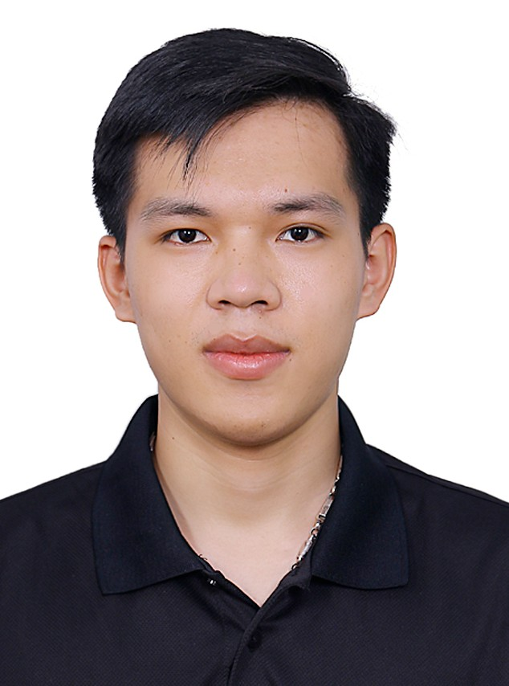

Tao Dang KhoaMaster's Student
267 Gajeong-ro, Yuseong-gu, Daejeon, 34113, Rep. of Korea |
 |


Biography
I graduated with a Bachelor’s degree in Mechatronics Engineering from Hanoi University of Science and Technology. I am currently pursuing a Master's degree in Science at the Korea University of Science and Technology. My research is centered on quantum circuit optimization using Deep Reinforcement Learning.
Experience
-
(KRISS) Korea Research Institute of Standards and Science, Yuseong-gu, Daejeon, S.Korea
Student Researcher
Advisor: Prof. Lee Changhyoup
Sep. 2024 – present
Honors & Awards
-
3rd Place
IonQ Quantum Challenging
Seoul, S.Korea, 2024. -
Academic Excellence Scholarship
Hanoi University of Science and Technology
Hanoi, Vietnam, 2023, 2022, 2021, 2020. -
Corporate Excellence Scholarship
Nhat Minh Company Limited
Hanoi, Vietnam, 2022, 2020.
Daizo Tec Co., LTD
Hanoi, Vietnam, 2022.
Publications
Quantum Computing
-
Quantum Circuit Optimization with Deep Reinforcement Learning
Dang Khoa Tao
Quantum Computing, 2025.
Optical Design
-
Liquid Vortex Surface Deformation Probed by Light Reflection
Vu, Danh Tien, Dang Khoa Tao, Nhu Thanh Nguyen, Cuc Thi Kim Nguyen, and Binh Xuan Cao
Physica Scripta, 2024. -
Accurate Subpixel Center Determination for Overlapping Spots
Dang Khoa Tao, Thi Phuong Anh Nguyen, Duc Duong Nguyen, Manh Toan Bui, Thi Kim Cuc Nguyen, and Xuan Binh Cao
Available at SSRN, 2024. -
A New Method for Detection of Laser Focal Position Based on Microlens Array
Nguyen, Duc Duong, Vu Yen Nhi Thai, Dang Khoa Tao, Thi Phuong Anh Nguyen, Xuan Binh Cao, and Cuc Nguyen Thi Kim
Acta Polytechnica Hungarica, 2024.
Conferences & Workshops
Posters
-
Deep Reinforcement Learning for Efficient Quantum Circuit Optimization
Dang Khoa Tao, Sumin Jin, Muhammad Raza, and Changhyoup Lee
Quantum Resources 2025 , Jeju, Korea. -
Deep Reinforcement Learning for Efficient Quantum Circuit Optimization
Dang Khoa Tao, Sumin Jin, Muhammad Raza, and Changhyoup Lee
2025 Annual Meeting of the Quantum Information Society of Korea , Busan, Korea.[poster]
-
Determination of Liquid Property Based on Dynamical Surface Reflection
Dang Khoa Tao, Danh Tien Vu, and Binh Xuan Cao
Proceedings of the 8th Academic Conference on Natural Sciences for Young Scientists, Masters and PhD. Students from ASEAN countries (CASEAN‑8) 2023 , Vinh, Vietnam.